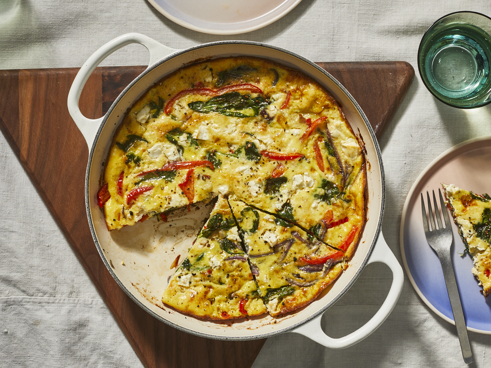

<-- Back to Homepage
Vegetable Frittata

Description
Not your typical zucchini quiche.
This fantastic medley of fresh veggies may be served either hot or cold.
You can even cut it into small pieces and serve as finger food!
Ingredients
- 3 tablespoons vegetable oil
- 1½ cups chopped zucchini
- 1½ cups chopped fresh mushrooms
- ¾ cup chopped onion
- ¾ cup chopped green bell pepper
- 1 clove garlic, minced
- 6 eggs, beaten
- ¼ cup half-and-half cream
- 2 (8 ounce) packages cream cheese, diced
- 2 cups shredded Cheddar cheese
- 4 slices whole wheat bread, cubed
- 1 teaspoon salt
- ¼ teaspoon ground black pepper
Steps
- Preheat oven to 350 degrees F (175 degrees C). Lightly grease a 9x13 inch baking dish.
- In a large skillet or frying pan, heat oil over medium high heat.
- Add zucchini, mushrooms, onion, green pepper and garlic; saute until tender.
- Remove from heat and let cool slightly.
- In a large bowl, beat together the eggs and cream.
- Stir in cream cheese, cheddar cheese, bread cubes and sauteed vegetables.
- Season with salt and pepper. Mix well and pour into prepared baking dish.
- Bake in preheated oven for one hour, or until center is set. Serve hot or cold.
ENJOY YOUR FRITTATA!